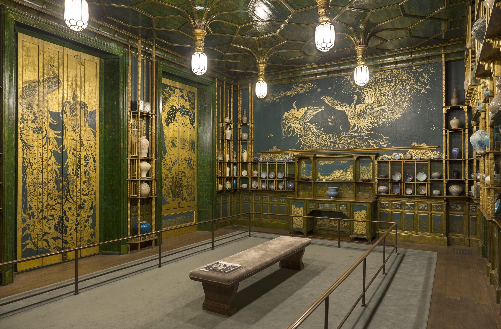

这原本只是一间伦敦豪宅的餐厅，主人只想让画家来"稍微调整一下"墙面的颜色。等房主弗雷德里克·莱兰德再次踏进这间屋子时，他看到的却是自己从中国买回的整墙青花瓷、进口的西班牙镀金皮革墙饰，全都被一层深邃的孔雀蓝绿和大片金箔孔雀羽纹重新覆盖了一遍——而在他最常坐的那面墙上，还多了一幅画着两只对峙孔雀的壁画，标题叫《艺术与金钱：这间屋子的故事》。
惠斯勒面对的不是一块画布，而是一间四面都要交代清楚的立体空间：左侧是两扇原本用来遮挡窗户的护窗板，他在上面画满了低头理羽、彼此靠近的孔雀；视线尽头的远墙，则留给了那幅最富戏剧性的对峙壁画；中间大片墙面，交给建筑师托马斯·杰基尔早先设计好的镀金格架，一层层摆满莱兰德收藏的康熙青花瓷器。
天花板是全屋最容易被忽略、却最见功力的部分：惠斯勒把杰基尔原本的木格吊顶整个鎏金，做出蜂巢般向四周发散的网状肋线，像是把孔雀开屏时羽毛上那一圈圈"眼斑"直接搬上了天花板——即便你没有抬头研究它的结构，也会本能地感觉到整间屋子在向你"张开"。
这是唯美主义运动（Aesthetic Movement）最典型的野心："总体艺术"（Gesamtkunstwerk）——墙面、家具、灯具、乃至瓷器的摆放节奏，全部服从同一套视觉逻辑，没有一处是可以被单独摘出来看的"装饰"。
整间屋子的底色是一种深邃的孔雀蓝绿（peacock blue-green）——不是纯蓝也不是纯绿，而是介于两者之间、饱和度极高的"珠宝色"（jewel tone）。惠斯勒选它，正是因为这个颜色本身就来自孔雀羽毛：孔雀的蓝绿色并非色素上色，而是羽毛微观结构对光线的干涉反射，会随视角变化而闪动——这也是为什么整面墙在不同光线角度下看起来总在"呼吸"。
真正让空间"贵气"起来的，是金箔的用法：惠斯勒没有用金色去画大面积色块，而是用它勾勒孔雀羽毛的每一根羽枝、格架的每一道线脚——金色只占很小的面积比例（目测不到全屋色彩的两成），却因为集中在轮廓线和高光位置，把深色背景一下子点亮。这是一种色彩理论里很实用的技巧：低饱和大面积的冷色打底，小面积高反光的暖色收边，比大面积混用多种颜色更容易显出"高级感"。
远墙那幅对峙壁画背景更深，偏向靛蓝——这是惠斯勒刻意做出的层次：主墙面稍浅、稍绿，故事发生的"舞台墙"更深、更蓝，让视线自然被吸向那个最富戏剧性的角落。
这间屋子的"发光"效果，靠的不是灯光本身有多亮，而是材质对比：惠斯勒把哑光的蓝绿颜料，和会随角度反光的金箔并置在同一块墙面上——同一盏吊灯打过来的光，在颜料区域会被均匀吸收，在金箔区域却会像镜子一样跳出高光。参观者每挪动一步，屋子里哪些地方"亮"、哪些地方"暗"都会跟着重新分布，这让一间静止的房间有了随人走动而变化的动态感。
这张照片本身的拍摄也在配合这种效果：摄影师尼尔·格林特里（Neil Greentree）用佳能EOS 6D、24mm镜头，f/9光圈、ISO 100、10秒长曝光拍下整个空间——小光圈保证了从近处护窗板到远处壁画都清晰在焦，超长的快门时间则让屋顶那几盏暖光提灯和四面墙的金箔反光都被完整、干净地记录下来，没有因为曝光不足而牺牲暗部的青花瓷细节。
更值得注意的是惠斯勒的"僭越"本身就是一种技法选择：杰基尔原本铺设的是一整墙价值不菲的古董镀金西班牙皮革，惠斯勒直接在这层名贵材质上覆盖颜料重新作画——某种程度上，这间屋子的视觉冲击力，是由一层被"牺牲"掉的旧装饰材料托举出来的。
这间屋子最打动人的地方，从来不只是它有多美，而是它背后那场毫不掩饰的争吵。建筑师杰基尔病倒后，船运巨富弗雷德里克·莱兰德请好友惠斯勒来"稍作润色"，没想到惠斯勒直接重画了整间屋子，事后开出2000英镑的账单——在当时，这笔钱接近今天的二十万美元。莱兰德只肯付一半，还坚持按"英镑"而非画家们更习惯、暗含"专业人士溢价"的"几尼"结算——几尼与英镑之间那一先令的差价，成了整场羞辱里最刺人的细节。
惠斯勒的回应，是把这场争执画在了莱兰德每天吃饭都要看到的墙上：那幅《艺术与金钱》里，姿态强势、羽毛张开的孔雀影射莱兰德——它的胸前羽毛被画成金币与银币堆叠的样子，脚下散落着代表"先令"的金属箔片；而姿态温和、略显退让的另一只孔雀，则是惠斯勒自己。这不是一句隐晦的抱怨，而是一份被永久钉在墙上、谁来吃饭都要看一遍的"艺术家维权声明"。
更耐人寻味的是它后来的命运：莱兰德至死都不肯原谅惠斯勒，1892年去世后，美国实业家查尔斯·朗·弗利尔却在1904年买下了这整间屋子，原样拆运过海，最终捐给史密森尼学会——一场私人恩怨，变成了公众可以自由走进去参观的艺术遗产。
詹姆斯·麦克尼尔·惠斯勒（James McNeill Whistler，1834–1903）出生于美国马萨诸塞州洛厄尔，成年后长居巴黎与伦敦，是唯美主义运动"为艺术而艺术"（art for art's sake）最重要的代言人之一。他最广为人知的作品是常被称作《惠斯勒的母亲》的《灰与黑的协奏曲一号》，以及一系列以"夜曲"（Nocturnes）命名的伦敦雾夜风景——都体现着他对色彩、氛围甚于叙事的偏爱，孔雀室正是这种理念被放大到整个建筑空间的极致案例。
孔雀室本身完成于1876–77年，惠斯勒（1903年逝世）与建筑师托马斯·杰基尔的原作早已进入公有领域；本文所用照片摄于弗利尔美术馆，摄影师尼尔·格林特里代表史密森尼学会"弗利尔与赛克勒美术馆"于2014年发布在Flickr，采用CC BY-SA 2.0协议授权，图片版权归摄影师与史密森尼学会所有。